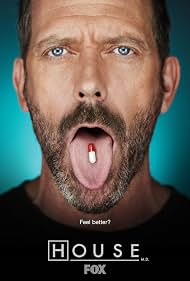

House

House é uma série de drama e médica baseada no personagem fictício Dr. Gregory House, um médico especialista em diagnóstico.
O cientista House (Hugh Laurie) é especializado em infectologia e nefrologia, realiza excelentes diagnósticos mantendo uma postura cética, distanciada e até mesmo mau humorada com os pacientes do fictício hospital de Princeton-Plainsboro. Ele trabalha com uma equipe de médicos selecionada de acordo com critérios duvidosos na busca de soluções para os piores males relacionados à saúde.
Informações principais
- Gênero: Drama Médico, Mistério.
- Ano de lançamento: 2004
- Temporadas: 8
- Episódios: 177
- Criador: David Shore
Curiosidades
- O teste no banheiro: Hugh Laurie filmou sua audição em um banheiro africano porque era o único lugar com luz boa o bastante enquanto gravava outro filme.
- Sotaque falso: O produtor Bryan Singer contratou Laurie achando que ele era um americano legítimo, sem saber que o ator é britânico.
- Quando leu o roteiro piloto pela primeira vez, Laurie achou que o protagonista da série seria o Dr. Wilson, pois não acreditava que um personagem tão antissocial pudesse lidera um programa.